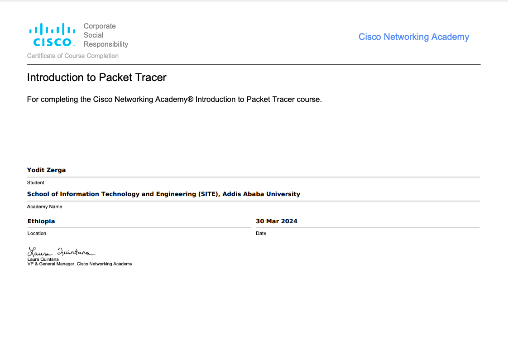

Certificates
Certificate In Ciso Networking
Institution: Cisco Networking Academy
Description: For completing the Cisco Networking Academy. Introduction to Packet Tracer course.
I am currently a third-year student at Addis Ababa University (AAU), pursuing a Bachelor of Science in Software Engineering. My time at AAU has been instrumental in shaping my understanding of key concept in software development and computer science.
Throughout my studies, I have engaged in a variety of relevant courses that have provided me with a solid foundation in the field. These courses include Data Structures and Algorithms, Database Management Systems, and several programming languages, notably Python and Java. Currently, I am expanding my knowledge through a course in Web Development, which is enhancing my skills in creating responsive and interactive web applications.
In addition to my coursework, I have had the opportunity to work on several practical projects that have reinforced my learning and allowed me to apply theoretical concepts in real-world scenarios. Some of my notable projects include:
Through these projects, I have developed strong technical skills and a passion for software development. My programming expertise includes:
As I continue my studies, I am excited to further develop my skills and work on more complex projects that contribute to my growth as a software engineer.
Institution: Cisco Networking Academy
Description: For completing the Cisco Networking Academy. Introduction to Packet Tracer course.
Institution: Top computer Training Certer
Description: An in-depth program on Graphics Design.